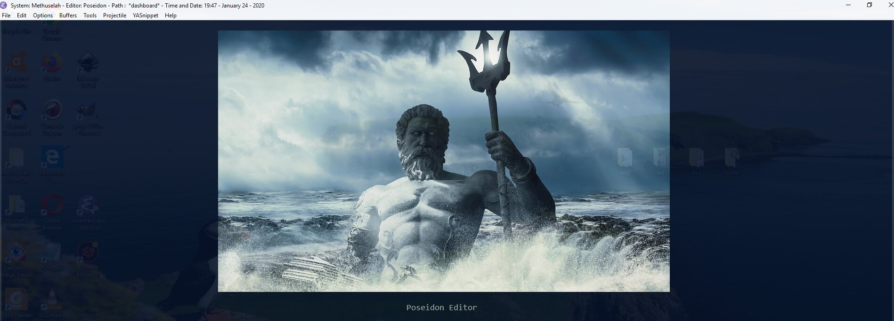

Today's post covers "Entering and Exiting Emacs" and "Default Appearance Customizations" from the appearance section of my init.
Appearance
Entering and Exiting Emacs
Default Appearance Customizations
Themes
Highlights
Hydras
Appearance Hydra
Preamble
Emacs is old school. You're either new to it - which means you wouldn't be here unless it was your type of thing - or you know what you're looking for. In either case, go to the side bar of this page and click on the 'Emacs' tag. Then read the posts y date from oldest to newest.
In the last emacs post I covered lines 664 - 769. This post covers lines 771 - 914
Most of this is relevant. If you don't want your Emacs to beep when you hit the end of the file, then you need to set a default, and the same for another annoying stuff. I make no promises the following section is efficient (let me know if you see some double entries).
Entering and Exiting Emacs
Dashboard is cool. Gives you an opening screen you can post an image.
Here's my current dashboard image. Below the images there are shorts-cuts to files you've been working on.

Exit Poseidon
A function to exit emacs. I use it from minibuffer or from a hydra.
1
2
3
4
5
6
7
8
9
10
11
12
13
14
15
;exit and save command-logs,only works if command-log-mode feature is loaded at the same time global-command-log-mode is started
(defunexit-poseidon ()
(interactive)
(progn
(if (featurep'command-log-mode)
(progn
(clm/save-command-log)
(stop-mpd)
(save-buffers-kill-terminal)))
(save-buffers-kill-terminal))
);end exit poseidon
; the mnemonic is C-x really quit (close everything)
(bind-key"C-x r q"'exit-poseidon)
(setqsystem-name"Your System Name")
(setquser-full-name"Your Name")
(setquser-mail-address"your-email@e-mail.com")
;menu-bar, tool-bar, scroll-bar
;(if (fboundp 'menu-bar-mode) (menu-bar-mode -1))
(if (fboundp'tool-bar-mode) (tool-bar-mode-1))
;(if (fboundp 'scroll-bar-mode) (scroll-bar-mode -1))
;clock
(setqdisplay-time-12hr-formatt)
(setqdisplay-time-format"%H:%M - %B %d - %Y")
(display-time-mode1)
;(setq display-time-day-and-date t)
;Put path, time, date at frame top
(setqglobal-mode-stringnil)
(defunframe-title-prefix()
(list (format"%s %%S: %%j " (concat"System: "system-name" - Editor: Poseidon - Path"))
'(buffer-file-name"%f" (dired-directorydired-directory"%b"))))
(setqframe-title-format'(" " (:eval (frame-title-prefix)) " - Time and Date: "display-time-string))
Desktop Config
I only use when I have some complex shit going on and I need to come back to it exactly. It's a bit weird, you need to alternate saves to keep a default opening in reserve.
1
2
3
4
5
6
7
8
9
10
11
12
13
14
15
;save desktop configuration
(use-packagedesktop+:commands (desktop-createdesktop-load)
:init
(eval-after-load"desktop+"'(defundesktop+--set-frame-title ()
(message"desktop+ set in initialization to not write to frame title")
))
:config
(require'desktop+)
;if you want to also save open buffers
;(setq desktop+-special-buffer-handlers '(org-agenda-mode shell-mode))
);end desktop+
A couple defaults
1
2
3
4
5
6
7
8
9
10
11
;inhibit font caching
(setqinhibit-compacting-font-cachest)
;increase/decrease text
(bind-key"C-="'text-scale-increase)
(bind-key"C--"'text-scale-decrease)
;Wrap words at window edge
(setqtruncate-partial-width-windowsnil)
;(global-visual-line-mode t)
(diminish'visual-line-mode)
Visual Fill Column and Adaptive Wrap
Visual Fill Column shows a line where words will end. You can change the fill column to fit various page widths, like word is 100 or something. Adaptive wrap I think preserves the indent on text wrapping.
1
2
3
4
5
6
7
8
9
10
11
12
13
14
15
16
;Wrap words at column edge
(use-packagevisual-fill-column:commandsvisual-fill-column-mode:config;(add-hook 'visual-line-mode-hook #'visual-fill-column-mode)
(advice-add'text-scale-increase:after#'visual-fill-column-adjust)
(advice-add'text-scale-decrease:after#'visual-fill-column-adjust)
);end use package fill column
; you need to download adaptive wrap library from somewhere and add a path to it
;adaptive wrap indents wrapped lines
(add-to-list'load-pathadaptive-wrap-p)
(require'adaptive-wrap)
Coding system
Overkill doesn't always work.
1
2
3
4
5
6
7
8
9
10
11
12
13
;all the coding systems you can handle (still doesn't always work)
(setqlocale-coding-system'utf-8)
(set-terminal-coding-system'utf-8)
(set-keyboard-coding-system'utf-8)
(set-selection-coding-system'utf-8)
(prefer-coding-system'utf-8)
(set-language-environment'utf-8)
(setqcoding-system-for-read'utf-8)
(setqcoding-system-for-write'utf-8)
(set-default-coding-systems'utf-8)
;Replace characters that paste into emacs incorrectly
Replace Garbage Characters
When you cut and paste from the net or other programs the coding systems don't always match. You can garbage characters on your screen. I use this to replace them. Whenever I meet a new one I add it below, if I remember.
1
2
3
4
5
6
7
8
9
10
11
12
13
14
15
16
17
(defunreplace-garbage-chars ()
"Replace goofy MS and other garbage characters with latin1 equivalents."
(interactive)
(save-excursion;save the current point
(replace-string"\221""`"nil (point-min) (point-max))
(replace-string"\222""'"nil (point-min) (point-max))
(replace-string"\226""-"nil (point-min) (point-max))
(replace-string"\227""--"nil (point-min) (point-max))
(replace-string"\223""("nil (point-min) (point-max))
(replace-string"\224"")"nil (point-min) (point-max))
(replace-string"\205""..."nil (point-min) (point-max))
(replace-string"\225""-"nil (point-min) (point-max))
));end replace-garbage-characters
;bind-key replace-garbage-characters
(bind-key"\C-cr"'replace-garbage-chars)
This kind man didn't invent the term scientist so you could make a mockery of earthly geometrics! He did it because science is badass, just like him. Taking science seriously is the first step to better health and a better world for all. You can take that first step here.
"We need very much a name to describe a cultivator of science in general. I should incline to call him a Scientist." ~ William Whewell.
Seriously though, most of our sciency posts are really about computer science, namely Emacs - but don't be swayed by the Old-Skoolers. If you're choosing a text editor for the first time, Emacs is dead.
Didn't you get the memo? And who are you anyway? Frankenstein? Give it up. Get over it. Go with Webstorm, or Sublime - open up your wallet and pay the man already. Or if you absolutely need to get cranked on Javascript, hit up Atom...it's free, and going places.
Having said all that, we use Emacs, and around here, the Earth is round.